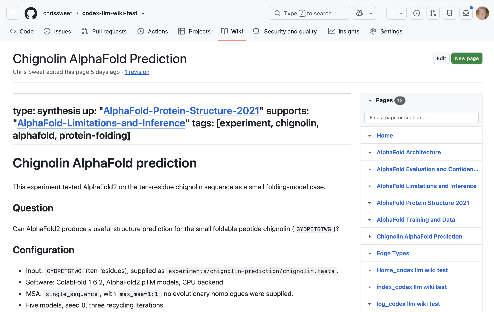
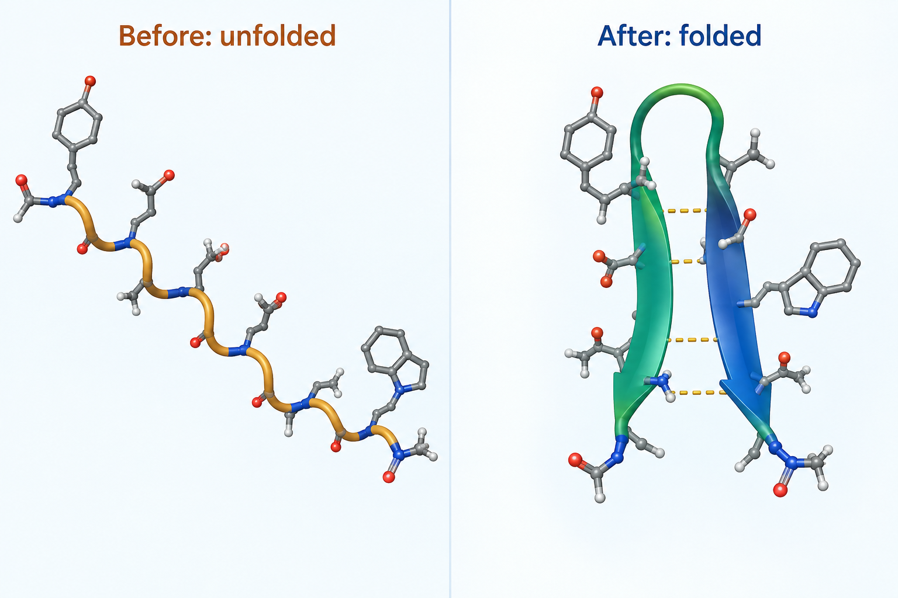

An introduction to using Codex for research workflows and getting a project-specific knowledge base started
Chris Sweet
Charles Vardeman
Priscila Moreira
James Sweet
2026-01-01
The bottleneck moved
The problem with a fast, plausible collaborator
Research is a loop: hypothesize, write the code, analyze, test, revise, and go round again. Producing each result used to be the slow part.
AI now appears to remove that bottleneck. It writes complex code, carries a vast working knowledge of statistics and analysis methods, and returns test results ready to present.
So the bottleneck of research is no longer producing results. It is knowing which results deserve belief.
Plausibility is the enemy. From our own project record, the AI describing its own failure, verbatim:
“The worst failure of this project: I built a tractable proxy instead of the user’s hypothesis, and let loose language hide the substitution.” Lessons-Learned.md, project wiki, 2026-08-19, recorded by the AI and found on query
Nothing was wrong with the output. It ran, it passed, it read well. It just was not the thing we set out to know. We only caught it because the AI had written the failure into a durable memory we could go back and read.
Tip 1. Have the LLM record what it learns into a durable memory you keep and can read back, not a chat window that vanishes. The quote above is from ours.
What epistemic discipline is
Habits you already have, that AI speed breaks
Epistemic discipline turns a produced result into something you actually know: justified, not merely generated. In practice, a few rules about what must be recorded, and carried with the claim, before it enters the record.
You already practice this. Each one is a standard scientific habit.
The habit
What you already call it
Provenance. a claim carries where it came from, and its scope
citation
Durable memory. what was tried, decided, and abandoned is written down
a lab notebook
Pre-commitment. targets declared before the data arrives
pre-registration
Why it breaks with AI
The habits live in your head and in a chat window that vanishes when the session ends. At AI speed they are the first thing skipped: when a result arrives in minutes, the provenance and the notes are what get dropped.
And AI discards and regenerates work at each step, instead of a small, preserving epsilon step that keeps what was already verified.
Seen here: asked to consolidate three reports into one paper, it regenerated rather than preserved, and the draft did not even describe the framework the reports exist to present. Filed as a dead end.
So stop remembering the discipline. Its key element is memory: move the provenance and the notes out of your head into an artifact the AI writes and you read. Get the memory right and the discipline holds.
What kind of memory?
Five kinds, only one is durable and yours to read
An agent has several memories. Most are frozen, optional, scoped, or temporary. The question that matters: which one still holds your project’s knowledge after the session ends?
The memory
What it is
How long it lasts
Embedded (training)
the model's learned world knowledge
frozen at the cutoff
Local memories
optional machine-local cross-session store (Codex /memories)
off by default, empty here
AGENTS.md
scoped instructions, loaded per folder at startup
rules, not a knowledge base
Session context
the live conversation and tool results
gone when the session ends
llm-wiki
pages the agent writes and you read, in git
durable, versioned, yours
And local memories are not yours to control. The agent decides whether to write one, and can overwrite or delete it. There is no version history and no backup: if a memory is lost or silently changed, you cannot see what happened or roll it back.
Only the llm-wiki is durable and under your control: the agent writes it, you read it, and it lives in git, so every change is visible, reviewable, and reversible.
What an llm-wiki is
The memory the LLM writes and you read
Proposed by Andrej Karpathy (OpenAI founding member, former director of AI at Tesla): dense, interlinked wiki pages as a persistent memory the LLM authors and maintains, kept as plain Markdown in version control.
A read-write loop that compounds. The LLM reads the wiki at the start of a session to recall where things stand, and writes back at the end to remember what it learned. Each session builds on the last instead of starting cold.
Auditable by you. Because it is Markdown in git, you can read exactly what the agent knows and see every change it makes.
Portable as a knowledge bundle: you can share the whole knowledge base and another person’s LLM can read it.
Trusted AI. The human stays in the loop: audit what the agent knows and check any claim at its source. When something is wrong, you catch it and direct the fix, which the agent makes and logs. Accountable and explainable, the trust our group builds toward, not a black box.
A persistent, compounding project memory the LLM writes and you read, not retrieval re-run from scratch on every question.
How to build an llm-wiki with Codex
The tutorial, run with students on 2026-09-15
llm-wiki is a Gist from Andrej Karpathy, an idea rather than an implementation. Our implementation assumes the following:
We assume project-based work, so there is a base GitHub repo for code, data, and artifacts.
By default we create the wiki as a GitHub wiki, a special repository GitHub uses for its wiki functionality, so you can view it in the online GitHub interface, shown here.
Other wiki destinations are available.
The next slides walk the whole process, built live in Codex: install, initialize, ingest a paper, run a real prediction, and record it as a durable wiki page.

github.com/chrissweet/codex-llm-wiki-test/wiki
Demo 1: install the plugin, make the repo
One marketplace, two commands
Our implementation of llm-wiki provides our own marketplace, a storefront for plugins, and we have versions for the AI harnesses Codex, Claude, and Cursor.
✓ Created repository chrissweet/codex-llm-wiki-test on GitHub
Same wiki, any harness. The identical plugin installs in Claude Code (/plugin marketplace add, /plugin install), Codex (codex plugin marketplace add, codex plugin add), and Cursor (cursor-agent plugin marketplace add).
created .llm-wiki/ (own git repo, attached to the wiki remote)
It scaffolds .llm-wiki/ as its own git repository, attaches it to the repository’s GitHub wiki remote, and writes the SCHEMA plus navigation pages. Result: a blank llm-wiki, ready to push.
The wiki is a separate repo from your code. Code and artifacts live in the project; durable knowledge lives in .llm-wiki/.
Demo 3: ingest the AlphaFold paper
wiki-source: one paper, five pages
$ $llm-wiki:wiki-source
source → AlphaFold-Protein-Structure-2021.pdf
+ source summary + 4 concept pages
One ingest produced a source-summary page and four linked concept pages:
Architecture
Training and data
Evaluation and confidence
Limitations and inference
Pages, not chunks. Preserve what a future reader needs: dataset scope, training cutoffs, named methods, exact metrics, confidence intervals, limitations. A number without a source page does not exist for the project.
Demo 4: run AlphaFold on chignolin
A ten-residue mini-protein: GYDPETGTWG
ColabFold 1.6.2, AlphaFold2 pTM, single-sequence MSA, five models, seed 0, three recycles, CPU.
High pLDDT is confident local geometry; pTM 0.06 is poor global-fold confidence in this single-sequence setup. These are model outputs, not experimental validation.
Demo 5: the result becomes a wiki page
Run in, durable page out

$llm-wiki:wiki-experiment filed Chignolin-AlphaFold-Prediction: the input, the configuration, the measured metrics, the images, and the interpretation limits, cross-linked and logged.
Live page:github.com/chrissweet/codex-llm-wiki-test/wiki
Does the memory actually work?
A first controlled measurement, on a real research project
Forty questions on one real project. Reading the llm-wiki answered 90% correctly and fabricated nothing, roughly double RAG’s 42% (10 fabrications); the model with no context scored 2%.
Approach
Correct
Overall (0-3)
Fabricated
Model alone, no context
2%
0.10
2
Plain RAG over the sources
42%
1.32
10
llm-wiki read path
90%
2.65
0
90%
correct, versus 42% for RAG. Roughly double.
0
fabricated, versus 10 for RAG.
The zero is by design, a layered control stack that keeps every claim honest:
1 · Honest-reporting rulesreal outputs only; tag every number’s corpus; file failures truthfully
2 · Verification gateblocks unsupported claims and untagged numbers before a commit
3 · Discipline gatesname the always-wrong shortcuts so the agent self-catches
4 · Blocking hooksfire the checks and can halt a bad write, exit-code enforced
Gates and hooks need an agentic harness that can run them, which is why we build in Claude Code and Codex, not the Claude or ChatGPT chat apps. Plain Markdown keeps every claim auditable.
Questions
Thank you
Agentic research workflows. In one session in Codex we installed a plugin, stood up a durable llm-wiki, ingested a paper, ran a real AlphaFold prediction, and recorded it as a linked, queryable page. And the memory measurably works: it beat plain RAG and fabricated nothing.
Chris Sweet, Charles Vardeman, Priscila Moreira, James Sweet